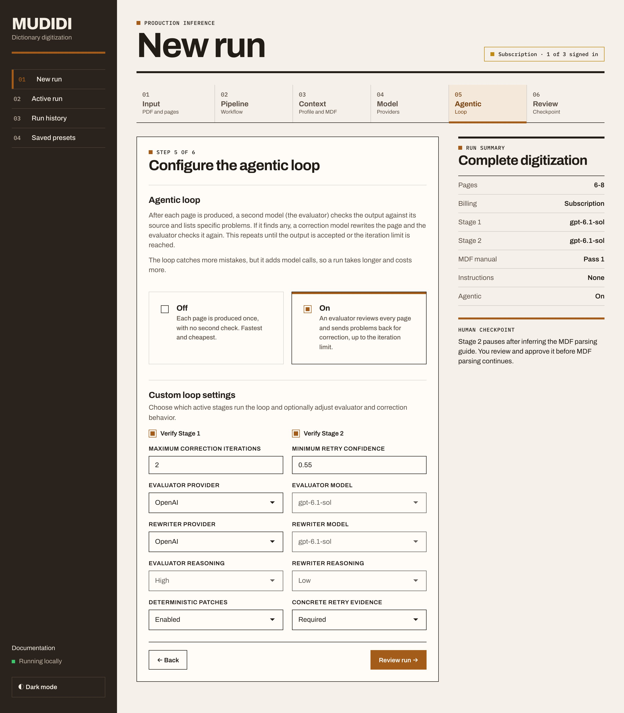

Raga notebook · page 7
\lx bea
\ge water, liquid, juice
\cf Fl. bea
\lx beku
\ge hole, grave
\lx bilau
\ge to steal
\cf pilau
Handwriting in. Structured MDF out.





MUDIDI
Dictionary digitization, with you in the loop.
Runs on your own machine
Raga1.pdf
101 pages
Choose an account
to continue to MUDIDI
you@example.com
ChatGPT subscription
Signed in
You can close this window and return to MUDIDI.
Drop in the scanned PDF and pick the pages.
Describe the dictionary: languages, layout, what an entry holds.
Pages to learn from left empty: it uses the dictionary pages chosen in step 1.
If you input hundreds of dictionary pages, pick a few that represent them all.
Sign in with a subscription you already have.
A suggested starting point: low reasoning to transcribe, high to parse.
Experiment to find the model and reasoning that work best for each stage.
Agentic loop on: a second model evaluates each page and re-iterates.
Stage 1 transcribes each page, then infers an MDF parsing guide.
You review the guide before anything is parsed.
Stage 2 converts every page to MDF.
Check each page against the scan, and fix what you see.